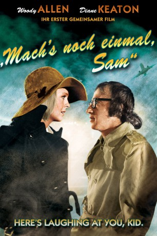

#4950 Mach's noch einmal, Sam
Alternativ: Play It Again, Sam
 
 IMDB-Wertung: 7.7 / 10
IMDB-Wertung: 7.7 / 10  Metascore: 0
Metascore: 0 
Filmkritiker Allan Felix hat kein Glück in der Liebe. Von seiner Frau vor die Tür gesetzt, versucht ein befreundete Paar ihn zu verkuppeln - ohne Erfolg. Ob Allans Halluzination von Filmheld Humphrey Bogart da Abhilfe verschaffen kann?
Jahr: 1972
Dauer: 85 Minuten
FSK: 12
Land: USA Studio: Paramount PicturesTonspuren: DD2.0 - ,
Untertitel:
Auflösung: 720p (1278x720) Größe: 2457 MB
Genre: Komödie, Liebe
Regisseur:  Herbert Ross
Herbert Ross
Drehbuch: Jill E. Blotevogel
Soundtrack:
Darsteller:
 Woody Allen als Allan
Woody Allen als Allan Diane Keaton als Linda
Diane Keaton als Linda Tony Roberts als Dick
Tony Roberts als Dick- Jerry Lacy als Bogart
- Susan Anspach als Nancy
- Jennifer Salt als Sharon
- Viva als Jennifer
 Michael Greene als Hood #1
Michael Greene als Hood #1 Ingrid Bergman als Ilsa Lund , archive footage, uncredited
Ingrid Bergman als Ilsa Lund , archive footage, uncredited Humphrey Bogart als Rick Blaine , archive footage, uncredited
Humphrey Bogart als Rick Blaine , archive footage, uncredited- Mark Goddard als Real Estate Developer , uncredited
- Paul Henreid als Victor Laszlo , archive footage, uncredited
 Claude Rains als Captain Louis Renault , archive footage, uncredited
Claude Rains als Captain Louis Renault , archive footage, uncredited- Joy Bang als Julie
- Susanne Zenor als Discotheque Girl
- Diana Davila als Museum Girl
- Mari Fletcher als Fantasy Sharon
 Ted Markland als Hood #2
Ted Markland als Hood #2- Tom Bullock als Taxi Hippie , uncredited
 Jean De Briac als Orderly , archive footage, uncredited
Jean De Briac als Orderly , archive footage, uncredited Erick Vinther als COP #2 , uncredited
Erick Vinther als COP #2 , uncredited
Datei: X:\1972\Mach's noch einmal, Sam (1972, FSK12, 1278x720).mkv seit 05.12.2016
Festplatte: HD 1971-1979
 Es gibt insgesamt 26 Filme in der Gruppe '1972'
Es gibt insgesamt 26 Filme in der Gruppe '1972'